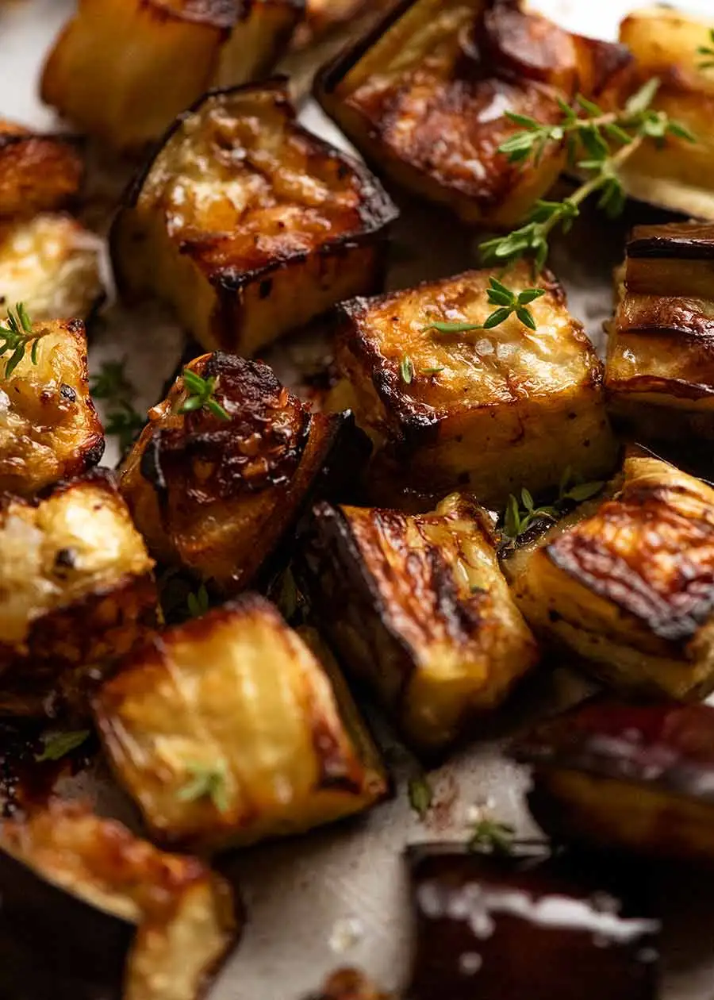

Roasted Eggplant

Description
Carmelised and golden eggplant. Blasted in a hot oven for your satisfaction.
Ingredients
- 2 medium eggplants (700g)
- 3 tablespoons olive oil
- 1/2 tsp salt
- 1/2 tsp black pepper
Steps
- Preheat oven to 240C (220C fan)
- Line a tray with parchment/baking paper (optional – recommended for first timers so you don’t lose the caramelised surface).
- Cut eggplant into large cubes – 3 cm / 1.2″. Place in large bowl, drizzle with oil, salt and pepper.
- Toss well, spread on tray, roast 20 minutes. Turn, roast for a further 10 minutes – edges should be caramelised, soft inside, but they’re not shrivelled up and dismal.
- Transfer to serving plate. Delicious served plain, but see below for some finishing options.